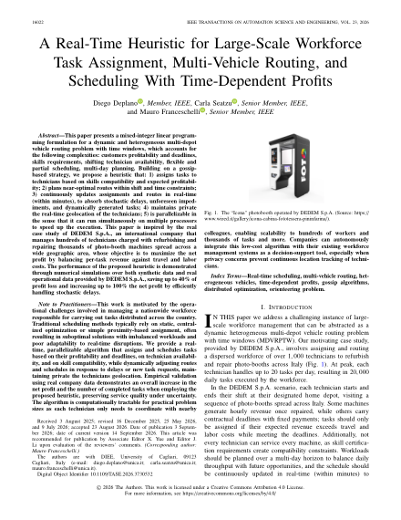
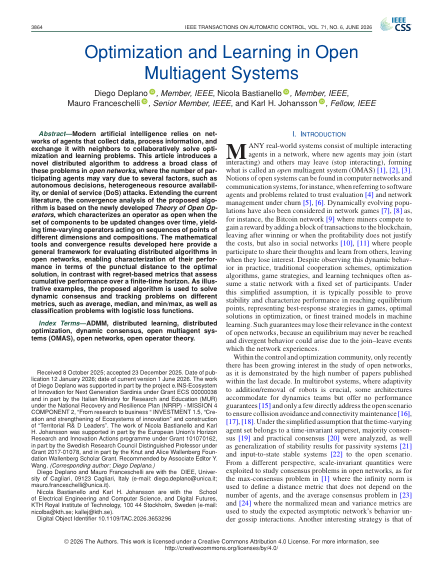
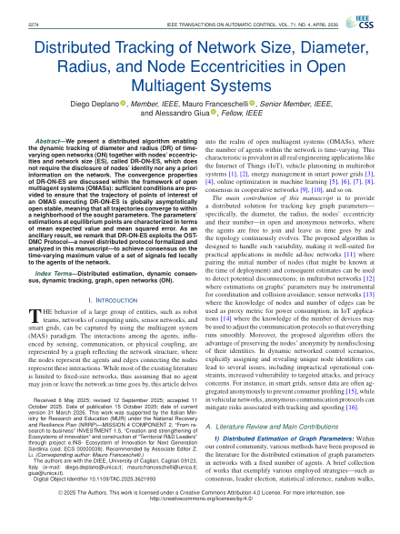
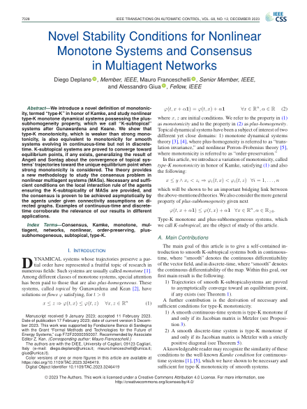
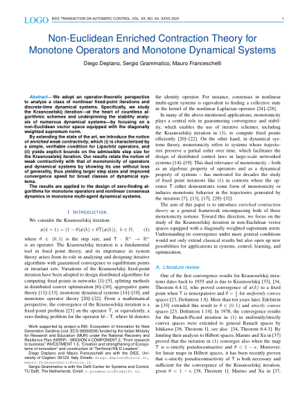

Diego Deplano
Assistant Professor (RTD-A) in Systems and Control Theory (Automatica ING-INF/04)
Department of Electrical and Electronic Engineering (DIEE), University of Cagliari (UniCa)
Piazza d'Armi, 09123 Cagliari, Sardegna, Italy
News
All newsUpcoming at the 65th IEEE Conference on Decision and Control, Honolulu, USA (15–18 December): four papers, [J12], [J13], [J14] and [C25], and the session “Optimization IV” as chair.
Best Young Author Journal Paper Award 2026 of the IEEE Control Systems Society Italy Chapter for “Robust Online Learning over Networks” [J09], presented at the IEEE CSS Days on 22 October.
New research projects ROSAS, as Work Package Leader, and ICARUS, funded by the Sardinia Regional Programme ERDF 2021–2027.
23rd IFAC World Congress, Busan, Korea: two papers, [C23] and [C24], and the open invited track “Open Multi-Agent Systems: Control, Optimization, and Learning” as co-organizer.
Course “Introduction to Open Multi-Agent Systems”, with Prof. Mauro Franceschelli, at the 29th SIDRA International PhD Summer School, Bertinoro, Italy.
“Optimization and Learning in Open Multiagent Systems” [J11] published in IEEE Transactions on Automatic Control.
Selected publications
View all publications



Thumbnail credits · CC BY 4.0
First-page thumbnails, resized from the linked papers. Licensed under Creative Commons Attribution 4.0.
- J15: © 2026 D. Deplano, C. Seatzu, M. Franceschelli.
- J11: © 2026 D. Deplano, N. Bastianello, M. Franceschelli, K.H. Johansson.
- J10: © 2025 D. Deplano, M. Franceschelli, A. Giua.
- J07: © 2023 D. Deplano, M. Franceschelli, A. Giua.
- A02: D. Deplano, S. Grammatico, M. Franceschelli, 2025. Authors' preprint.
RESEARCH INTERESTS
- Multi-Agent Systems & Consensus Algorithms -
- Coordination & Control of Networked Systems -
- Distributed Estimation & Optimization Methods -
- Type-K Monotone Nonlinear Systems -
- Fixed Point & Monotone Operator Theory -
APPLICATION AREAS
- Multi-Robot Systems -
- Self-organizing Networks -
- Industrial Monitoring and Control -
- Energy Communities -